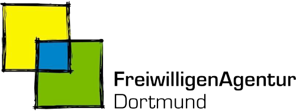

Über ACoD
Unsere Partner
Mit diesen Partnern arbeiten wir in Dortmund zusammen.

FreiwilligenAgentur Dortmund
Vermittelt seit 2002 zwischen Menschen, die sich engagieren möchten, und Organisationen, die Freiwillige suchen.
Website ansehen ↗ACI
Ausschuss für Chancengerechtigkeit und Integration (ACI)
Vertritt die Interessen der Menschen mit Einwanderungsgeschichte in Dortmund und berät Rat und Verwaltung der Stadt.
Website ansehen ↗MIA-DO-KI
Kommunales Integrationszentrum Dortmund (MIA-DO-KI)
Plant und fördert Integration in Dortmund gemeinsam mit Politik, Verwaltung, Vereinen und Migrantenorganisationen.
Website ansehen ↗Partner werden
Schulen, Unternehmen, Vereine und Initiativen: Lassen Sie uns gemeinsam etwas für Dortmund bewegen.